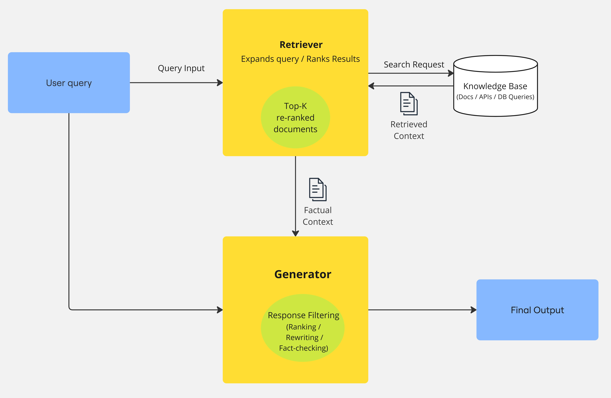

ArXiv Paper RAG Search Engine
A search engine designed to help users discover relevant AI and machine learning research papers.
Project Overview
The project focuses on the retrieval component of a Retrieval-Augmented Generation (RAG) system, designed to return documents relevant to a user’s query. Built in Python using Flask, the retrieval API is hosted on Render and can be queried by external systems through a public endpoint. The document text was preprocessed and divided into chunks, with TF-IDF vectors generated to represent the text and enable similarity-based retrieval. The resulting document chunks and vector data are stored in SQLite, allowing the Flask endpoint to process incoming queries, identify relevant document chunks, and return them to downstream RAG components for further generation.
Architecture

The system consists of a data ingestion pipeline, document processing and indexing layer, search backend, and web interface. The Generator is not included in this demo, but it would be provided the returned chunks from the database to augment its ability to generate accurate answers.
Key Features
- Vector-based semantic search
- TF-IDF indexing and ranking
- Real-time search API
- Python/Flask backend
- SQLite data storage
Technologies
Results
Describe your measured results here. This could include search latency, number of indexed papers, ranking metrics, throughput, or other meaningful measurements.
What I Learned
I learned that effective RAG systems can be built using low-overhead technologies that are well suited for environments with limited computing resources. Using TF-IDF to create vector representations of text eliminated the need for a resource-intensive embedding LLM, while SQLite provided a lightweight database solution without requiring a separate, continuously running SQL server such as PostgreSQL.